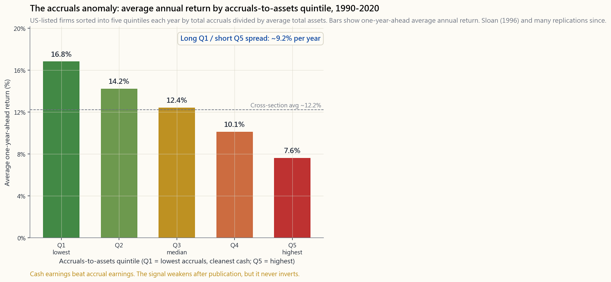
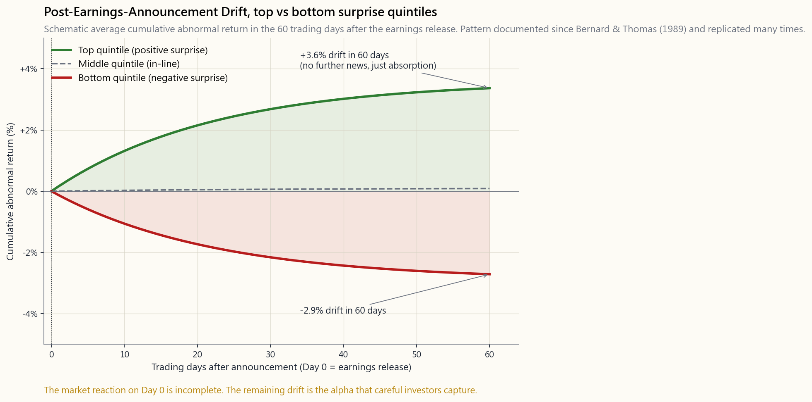

Week 20: Earnings vs Cash Flow — Drift, Accruals, and Why FCF Beats EPS
1. Why This Is Important
Earnings are an opinion. Cash is a fact. That sentence is older than any of the textbooks that quote it, and it is still the single most useful sentence in fundamental investing.
Reported earnings per share — the number on the wire at 4:01 PM Eastern that the algorithms react to in milliseconds — is the output of dozens of accounting choices. When to recognise revenue. How fast to depreciate. What to capitalise versus expense. How much to reserve for bad debts. Each choice is, individually, defensible. Stacked together, they create enough latitude that the same underlying business can print a $2.10 EPS or a $1.85 EPS depending on the mood of the CFO and the patience of the auditor.
Free cash flow is harder to fake. Cash either showed up in the bank account, or it did not. The cash flow statement is not free of accounting judgement — classification of operating versus investing flows is genuinely ambiguous in places — but the level of cash moves much less than the level of reported earnings under management discretion. That asymmetry is why this week matters:
quality, not earnings level.** Bernard & Thomas (1989) documented the post-earnings-announcement drift — stocks with positive surprises continue drifting up for sixty days, stocks with negative surprises continue drifting down. Sloan (1996) documented the accruals anomaly — firms whose earnings are mostly accruals underperform firms whose earnings are mostly cash by roughly seven to ten percentage points per year over the following year. Both anomalies have been replicated dozens of times. Both have weakened since publication. Neither has inverted.
quality.** Enron, WorldCom, Wirecard, Luckin, Valeant. In each case, the gap between reported earnings and operating cash flow was screaming for years before the headline. Reading the gap is not a substitute for an audit. It is a way to never own the companies the auditor will eventually have to disown.
model in Week 21 discounts FCF, not EPS. A company whose EPS is growing while FCF is shrinking is, by that model, becoming less valuable, not more — regardless of what the analyst note says.
is getting harder to find, earnings management gets more aggressive. Receivables stretch out. Inventory builds. Costs get capitalised. Buybacks juice EPS even as FCF flatlines. The dispersion is itself a regime signal.
This is one of the structural alpha sources in this course: cash-versus-accruals interpretation. It is not a secret. It is not crowded out either, because most of the market still trades on the headline number.
2. What You Need to Know
2.1 The Identity: Accruals = Earnings − Cash Flow
Start with arithmetic. For any period:
- Net income = Operating cash flow + Total accruals
- Total accruals = Net income − Operating cash flow
Accruals are not bad. They exist for a reason. Revenue earned but not yet collected — receivables — is a real asset. Inventory built ahead of demand is a real economic activity. Depreciation, the largest single accrual at most industrial firms, is an honest attempt to match an asset's cost to the periods that asset is producing.
The problem is that accruals are also the lever managers reach for when the quarter is short. Every line on the bridge from net income to OCF is a discretionary judgement, and every one of them, when pushed hard enough, increases reported earnings without increasing real cash.
Two ways to compute accruals for a stock screen:
- Balance-sheet method (Sloan): change in non-cash current
- Cash-flow method: simply
(Net income − Operating cash flow) /
The accruals anomaly is shown below:

The Q1-minus-Q5 spread is the academic estimate of the alpha. In a real portfolio, half of it gets eaten by transaction costs, capacity limits, and short-borrow fees on the Q5 leg. But even after that, this is one of the best risk-adjusted long-short signals ever documented in equity markets.
2.2 The Post-Earnings-Announcement Drift (PEAD)
The PEAD is the closest cousin to the accruals anomaly. Bernard & Thomas (1989) ranked every quarterly earnings announcement by standardised unexpected earnings (SUE) — the surprise relative to analyst consensus, divided by the historical standard deviation of that surprise. Top quintile vs bottom quintile, post-announcement returns over sixty trading days, averaged over thousands of announcements: the result is stable enough to be boring.

The drift is incomplete absorption of news. The market reacts on Day 0 — the day of the release and the conference call — but the reaction is, on average, only about two thirds of what it should be. The remaining third leaks out over the next sixty days as analyst revisions catch up, as the next quarter's pre-announcement narrows expectations, and as slower investors finally trade on what fast ones already saw.
Why does this not get arbitraged away? Three reasons that show up across all of the persistent earnings anomalies:
- Limits to arbitrage. Borrow on the Q5 leg is genuinely
- Career risk. A long-short manager whose Q1 leg has a six-month
- The signal is slow. PEAD is a sixty-day phenomenon. The
This connects to the two sides of price discovery: momentum and mean-reversion. PEAD is fundamentally a momentum effect — the stock that surprised up keeps drifting up — because the information is travelling through the market slower than the price. The accruals anomaly is a mean-reversion effect — earnings inflated by accruals revert toward cash over the following year. They sit on opposite sides of the same coin.
2.3 Free Cash Flow, Carefully Defined
FCF gets quoted three different ways in the wild. You need to know which one you are reading.
- FCF to the firm (FCFF) = OCF − Capex. The plain definition.
- **FCF to equity (FCFE) = FCFF − Net debt repayment + Net debt
- "Adjusted FCF" (whatever management says it is). Sometimes
For screening, use FCFF. Use a multi-year average — three to five years — because single-year FCF is noisy from working-capital and capex timing. The Apple FY2014-FY2024 chart from Week 8 is the canonical example: EPS and FCF/share track within pennies most years, and where they diverge (FY2020 working-capital release; FY2024 EU tax charge), the divergence has a clean accounting explanation.
The interactive lab below lets you flip between six representative companies and see the EPS-vs-FCF profile and the per-year accrual:
Open: Earnings vs Cash Flow Lab
The pattern matters more than any single year. Apple's FCF runs above EPS most years — capital-light, working-capital favourable. Coca-Cola's two lines hug each other within pennies — steady-state brand-rent business. Microsoft's FCF lagged EPS in FY2023-2024 not because of manipulation but because of the AI capex bulge — that is an investment story, not a quality story. Amazon shows the textbook cash-light-but-EPS-light case where huge non-cash D&A makes earnings look thin while the cash story (post-2022 capex moderation) is what actually matters. GE shows the opposite — multi-year restructuring charges depress EPS far below the underlying cash. JPM is a bank; "FCF" for a bank is conceptually meaningless, and you need ROTCE instead (covered in Week 19).
2.4 Earnings Quality Red Flags — The Five That Matter
A short list. Most quality work in the wild is a variation of these five.
1. Days sales outstanding (DSO) rising faster than revenue. DSO = receivables / (revenue / 365). If revenue grew 12% and DSO grew 30%, the company is "selling" to customers who are not yet paying. Revenue is being recognised earlier in the cycle, or to customers who will not actually pay. Aggressive DSO is the most common precursor to a revenue restatement.
2. Days inventory outstanding (DIO) rising faster than revenue. DIO = inventory / (COGS / 365). Inventory builds either because the company is building ahead of expected demand (sometimes legitimate) or because the inventory the company already produced is not selling (usually the bad version). Either way, it is a use of cash that does not show up on the income statement until the markdown finally hits COGS.
3. Capitalisation of costs that should be expensed. R&D under US GAAP is mostly expensed; under IFRS, much of it can be capitalised. Software development costs, content production costs, acquisition-related "integration" costs — the more cost a firm moves to the balance sheet, the higher today's earnings and the lower tomorrow's. WorldCom's fraud was, mechanically, this exact move on $11B of network operating expense.
4. Recurring "one-time" charges. A company that takes a large restructuring charge in three out of four years is not restructuring; it is telling you the underlying earnings power is lower than the "adjusted" headline. The charges are real cost. They just keep getting flagged as not-real-cost.
5. The accrual ratio itself. (Net income − OCF) / Net income,
or scaled by average assets, year after year. A persistent positive
gap is a quality concern. A persistent negative gap (FCF > EPS)
is the opposite — the signature of a capital-light business with
non-cash charges dragging on earnings.
None of these are deterministic. Each has a legitimate version. But in a screen, the firms that flunk three of the five tests have a materially worse forward return distribution than the firms that pass them all.
2.5 Late-Cycle Dispersion — Why This Week Matters in 2026
Through 2024 and into 2025, the EPS-vs-FCF dispersion in the S&P 500 widened. Reported earnings continued to grow at 8-10% per year while operating cash flow growth slowed to 3-4%. Some of that gap is real — AI capex is genuinely investment, not manipulation. Some of it is the late-cycle pattern — DSO and DIO drifting up, "adjusted" metrics drifting further from GAAP, share buybacks juicing EPS while FCF flatlines. The cycle is not the same every time. The gap behaves roughly the same every time.
The contrarian read: the firms whose FCF is keeping pace with EPS in this environment are getting a quality premium that the headline EPS multiple does not yet reflect. The firms whose EPS-FCF gap has widened for three years running are tomorrow's accrual reversion candidates. This is why "look at cash, not earnings" is a structural alpha source, not a tactical one. It works in every regime. It works hardest when the rest of the market has stopped checking.
3. Common Misconceptions
for quality questions; EPS is more useful for profitability comparisons within a stable industry. A capex-heavy firm in year-three of a four-year build will show ugly FCF and fine EPS. That is not a quality problem. It is a timing problem.
accounting. Without them you would have cash accounting, which is useless for businesses with multi-period contracts, inventory, or long-lived assets. The question is not whether accruals exist; it is whether they are growing faster than economic reality.
shrunk — Bernard & Thomas reported a 60-day spread of 4-5% in the 1980s; modern estimates are 2-3% for the top vs bottom quintile. But the asymmetry has not flipped, and the drift is still detectable in every replication through 2024.
negative or near-zero FCF for most of its first decade as a public company while building infrastructure that is now generating tens of billions per year. Negative FCF in service of a high-return investment programme is great. Negative FCF because the working capital is hemorrhaging is fatal. Look at the cause.
versus consensus matters in the next 24 hours. The PEAD says it also matters in the next 60 days. But the multi-year story — quality of those earnings, conversion to cash — is what compounds the stock price over a 5-10-year hold.
back."** Wrong, mostly. SBC is a real cost — the firm is giving away part of the company. The cash that would have been spent on payroll is instead being raised by issuing new shares, which dilutes you. The right adjustment is to subtract SBC from FCF, not add it back, and many "adjusted FCF" presentations get this exactly backwards.
audit-tested line, but channel-stuffing, bill-and-hold, round-trip transactions, and aggressive percentage-of-completion accounting have all been used to inflate revenue in real cases. The DSO check exists precisely because revenue can be pulled forward.
Wrong. The PEAD says you get some drift after a beat, on average, in excess of the immediate reaction. But the average masks dispersion — beats that come with deteriorating cash flow tend to mean-revert hard. Beat plus rising accruals is a worse profile than in-line plus stable accruals.
(FCF / market cap) is a cleaner valuation metric for mature non-bank businesses than P/E. For high-growth firms with negative FCF, it is meaningless. For banks and insurers, it is meaningless. For asset-heavy capex-cycle firms, single-year FCF yield is noisy — average over five years.
investors."** Wrong. The five red flags above are computable from the standard 10-K filing in 30 minutes per company. They will not catch a sophisticated fraud. They will catch the obvious ones, and they will tell you which 10-Ks deserve another hour of your time.
4. Q&A Section
**Q1: How quickly can I screen for accruals on US-listed equities?** A: With a paid data feed (Compustat, FactSet, S&P Capital IQ) the ratio is one column and the quintile sort is one query. With free sources, pull (Net Income − OCF) from the 10-K cash flow statement for each name in your watchlist; scale by average total assets. A twenty-name watchlist takes an hour the first time and ten minutes per quarter to refresh.
Q2: Should I short the high-accrual names? A: Probably not as a retail investor. Short borrow on small- and mid-cap names is expensive, mark-to-market drawdowns can be sharp, and short squeezes happen even on terminal cases. The cleaner implementation is to screen those names out of your long book and concentrate on the long-cash quality side. That captures most of the asymmetry without the operational complexity — long-cash quality goes in the core tranche; the short side, if you run it at all, sits in a specialty tranche.
Q3: Why does PEAD drift continue for 60 days and not longer? A: Around the 60-day mark the next quarter's pre-announcement window opens and forward expectations start being discounted into the price. The "old" surprise is no longer the marginal news. Empirically the drift fades into the next earnings cycle, not after a fixed calendar window.
Q4: Is the accruals anomaly the same as the quality factor? A: Related, not identical. The "quality" factor as MSCI and others construct it usually combines accruals, gross profitability, leverage, and earnings stability. Accruals is one input. The pure accruals anomaly is more concentrated than the blended quality factor and historically had a bigger Sharpe.
Q5: What about non-US markets? A: The accruals anomaly has been replicated in most developed markets — UK, Japan, Australia, Western Europe — at varying strengths. In emerging markets the data quality is weaker and the shorting frictions worse. Our investable universe in this course is US-listed equities anyway, so this is not a real constraint for us.
Q6: How do I use FCF yield in valuation? A: For mature non-bank firms, an FCF yield (5-year average FCF over current market cap) above the long Treasury yield plus a sensible equity premium is a reasonable starting screen. So if 10-year Treasuries are at 4.5% and you want a 4-5% equity premium, you are looking for FCF yield above 8.5-9.5%. Below that you are paying for expected growth; above that you are being paid to wait.
Q7: Why did Microsoft's FCF lag EPS in 2024? A: Capex. Microsoft is spending $50-60B per year on AI data centres, chips, and cooling infrastructure. That capex is real and is flattening FCF even though OCF and EPS are at all-time highs. Whether the AI capex earns its cost of capital is the real question — the FCF gap itself is informative but not by itself a quality problem.
**Q8: What's the difference between "earnings management" and "earnings manipulation"?** A: Mostly intent and degree. Both shift earnings between periods using legal accounting choices. Management is done quietly to smooth quarterly volatility — almost every public company does some of it. Manipulation is done aggressively to hit a target the company would otherwise miss, and shades into fraud when the choices stop having a defensible accounting basis. The earnings-quality red flags catch both.
Q9: How does this lesson interact with valuation (Week 21)? A: Directly. The DCF in Week 21 discounts free cash flow, which means everything you learned this week about the quality of FCF feeds straight in. Two firms with identical projected FCF deserve different multiples if one has a clean accruals profile and the other does not. The market does not always price that gap; you can.
**Q10: What about software companies with deferred revenue and SBC?** A: Two complications, opposite directions. Deferred revenue (cash received for services not yet rendered) inflates OCF relative to EPS; that is a legitimate tilt, not a quality issue, as long as the underlying contracts are renewable. SBC, as discussed in misconception #6, is a real cost and should be subtracted from FCF to get the true equity-holder cash. The net effect varies by firm — modern SaaS often shows very high OCF and middling SBC-adjusted FCF.
Q11: Is there a "bad" version of FCF > EPS? A: Rarely, but yes. A firm that is shrinking — drawing down working capital and not replacing assets — can post FCF above EPS for a year or two while the business is being liquidated. The clue is declining revenue and declining capex. The healthy version of FCF > EPS is a stable or growing capital-light business. The unhealthy version is a melting ice cube monetising its inventory and receivables one last time.
Q12: How much weight should I put on a single quarter? A: Less than the headlines do. PEAD says the print does matter for the next 60 days. But the 12-month forward return is much more correlated with multi-year accrual quality and cash-flow conversion than with any single quarter's surprise. Quarter-to-quarter volatility is mostly noise; the trend in EPS-vs-FCF dispersion is signal.
第20週：盈利與現金流——漂移、應計項目，以及為何自由現金流勝過每股盈利
1. 為何此課題至關重要
盈利是一種意見。現金是一個事實。這句話比任何引用它的教科書都要古老，卻仍然是基本面投資中最有用的一句話。
報告的每股盈利——那個在美東時間下午四時零一分出現、算法在毫秒內即時反應的數字——是數十個會計選擇的結果。何時確認收入。折舊速度多快。哪些計入資本開支、哪些即時列為費用。壞賬準備金撥備多少。每個選擇單獨來看都站得住腳。疊加在一起，它們創造出足夠的彈性空間，令同一間企業的每股盈利，因應財務總監的心情和核數師的耐性，可以打印出$2.10或$1.85的截然不同結果。
自由現金流更難造假。現金要麼真的存入了銀行戶口，要麼沒有。現金流量表並非完全沒有會計判斷的空間——經營性與投資性現金流的分類在某些地方確實存在模糊地帶——但現金的水平遠比報告盈利在管理層酌情處理下的波動幅度要小得多。這種不對稱性正是本週課題重要之所在：
這是本課程其中一個結構性阿爾法來源：現金與應計項目的解讀。它並非秘密。它也未被完全套利磨平，因為大多數市場仍在交易盈利標題數字。
2. 你需要掌握的知識
2.1 恆等式：應計項目 = 盈利 − 現金流
從算術開始。在任何時期：
- 純利 = 經營性現金流 + 應計項目總額
- 應計項目總額 = 純利 − 經營性現金流
應計項目本身並非壞事，它們的存在有其原因。已賺取但尚未收取的收入——應收賬款——是真實的資產。預計需求而建立的存貨是真實的經濟活動。折舊——大多數工業企業最大的單一應計項目——是將資產成本合理分攤至該資產產生效益各期的誠實嘗試。
問題在於，應計項目同時也是管理層在季度業績不足時所伸出的操控槓桿。從純利到經營性現金流的過渡橋段上，每一行都是酌情判斷，而其中每一行，一旦用力推動，都會在不增加真實現金的情況下提高報告盈利。
計算應計項目用於股票篩選的兩種方法：
- 資產負債表法（Sloan）： 非現金流動資產的變動，減去流動負債的變動（不含短期債務），再減去折舊。以平均總資產規模化。每年將企業按五分位數排列。做多第一分位（最低），沽空第五分位（最高）。
- 現金流法： 簡單計算「（純利 − 經營性現金流）/ 平均總資產」。精神上等效，自2002年SFAS規則收緊後略為簡潔。
第一分位減第五分位的差距是阿爾法的學術估計值。在真實投資組合中，其中一半會被交易成本、容量限制以及第五分位沽空的借倉費用所蠶食。但即便如此，這仍然是有史以來在股票市場記錄到的風險調整後最佳多空信號之一。
2.2 盈利公佈後漂移效應（PEAD）
PEAD是應計項目異象最近似的近親。Bernard及Thomas（1989年）將每份季度盈利公告按標準化意外盈利（SUE）排列——即相對於分析師共識的盈利驚喜，除以該驚喜的歷史標準差。最高分位對比最低分位，在公告後六十個交易日的事後回報，以數千份公告取均值：結果穩定得近乎平淡無奇。
漂移源於市場對消息的不完全吸收。市場在第0日——即公告發出及業績電話會議當日——做出反應，但平均而言，該反應只有應有反應的約三分之二。其餘三分之一在隨後六十天內緩慢洩露，隨著分析師預測逐漸跟上、下季度業績前發佈收窄預期，以及較慢的投資者終於交易了快速投資者早已注意到的信息。
為何這個現象無法被套利磨平？在所有持久性盈利異象中，以下三個原因反覆出現：
- 套利限制。 第五分位股票的借倉費用確實昂貴。許多應計項目最高的企業是細價股或中型股，借倉市場深度有限。摩擦成本吞噬了需要大規模佈倉的基金所能獲得的阿爾法。
- 職業風險。 一位做多空組合的基金經理，若其第一分位長倉在六個月內持續回撤，將在學術層面的均值回歸到來之前先被客戶贖回。逆市而行在平均上正確，但在任何特定年份都充滿危險。
- 信號速度緩慢。 PEAD是六十天的現象，應計項目異象是十二個月的現象。市場上大多數的交易量操作於一天的時間框架——即報告數字對比共識。慢速信號不會與快速交易者競爭。
2.3 自由現金流的精確定義
自由現金流在市場上以三種不同方式被引用。你需要清楚自己正在閱讀的是哪一種。
- 企業自由現金流（FCFF）= 經營性現金流 − 資本開支。 最基本的定義。在維持和拓展資產基礎之後、在向債權人或股東回報任何資金之前，剩餘的現金。這是現金流折現法所需要的數字。
- 股權自由現金流（FCFE）= 企業自由現金流 − 債務淨還款 + 債務淨發行。 股權持有人專屬的剩餘現金。用於股息折現框架。
- 「調整後自由現金流」（管理層自訂定義）。 有時加回以股份支付的薪酬。有時剔除與收購相關的資本開支。有時剔除連續四年都出現的「一次性」營運資金變動。對待所有調整後自由現金流的方式，應與對待調整後息稅折舊攤銷前盈利一樣：永遠保持一眉高揚的懷疑態度。
以下互動實驗室讓你在六間具代表性的企業之間切換，查看每股盈利對比自由現金流的走勢圖以及各年度的應計項目：
規律比任何單一年份更為重要。蘋果的自由現金流在大多數年份高於每股盈利——輕資產、營運資金有利。可口可樂的兩條線幾乎分毫不差地緊貼在一起——穩定的品牌特許經營業務。微軟的自由現金流在FY2023至2024年落後於每股盈利，原因並非操控，而是人工智能資本開支激增——這是一個投資故事，而非質量問題。亞馬遜展示了現金流尚可但每股盈利薄弱的教科書案例，龐大的非現金折舊攤銷令盈利看起來微薄，而真實的現金故事（2022年後資本開支趨於溫和）才是真正重要的。通用電氣則呈現相反情況——多年重組費用令每股盈利遠低於真實現金水平。摩根大通在此提醒你——對銀行而言，「自由現金流」在概念上毫無意義，你需要用股本回報率代替（已在第19週涵蓋）。
2.4 盈利質量警號——最重要的五個
以下是精簡列表。市場上大多數質量分析工作都是這五項的變體。
1. 應收賬款週轉天數（DSO）增速快於收入。 DSO = 應收賬款 / （收入 / 365）。若收入增長12%而DSO增長30%，則該公司正在向尚未付款的客戶「銷售」。收入在週期較早的時間點被確認，或向最終不會付款的客戶確認。DSO激進上升是收入需要重述的最常見前兆。
2. 存貨週轉天數（DIO）增速快於收入。 DIO = 存貨 / （銷貨成本 / 365）。存貨積累要麼因為企業在預期需求前提前生產（有時合理），要麼因為已生產的存貨賣不出去（通常是壞的版本）。無論哪種情況，都是現金流入倉庫而非銀行，且不會在損益表上顯示，直到最終降價反映在銷貨成本中為止。
3. 應資本化的成本被資本化。 美國通用會計準則下的研發費用大多即時列支；在國際財務報告準則下，大部分可資本化。軟件開發成本、內容製作成本、收購相關的「整合」成本——企業將越多成本移至資產負債表，當期盈利越高，未來盈利越低。世界通訊的造假，從機制上看，正是這個動作——將110億美元的網絡運營費用移至資產負債表作為資本開支。
4. 反覆出現的「一次性」費用。 一間企業在四年中有三年計提大額重組費用，那並非在重組；而是在告訴你其實際盈利能力低於「調整後」的標題數字。這些費用是真實成本，只是一再被標籤為非真實成本而已。
5. 應計比率本身。 「（純利 − 經營性現金流）/ 純利」，或以平均資產規模化，年復一年地觀察。持續正差距是質量問題。持續負差距（自由現金流 > 每股盈利）則相反——這是非現金費用拖累報告盈利的輕資產業務特徵。
以上警號均非決定性指標，每項都有合理的版本。但在篩選中，未能通過五項測試中三項的企業，其前瞻回報分佈明顯差於全部通過的企業。
2.5 週期末段的差距擴大——為何此課題在2026年尤為重要
整個2024年及進入2025年期間，標普500指數內每股盈利與自由現金流的差距持續擴大。報告盈利繼續以每年8至10%的速度增長，而經營性現金流增速則放緩至3至4%。部分差距屬於真實情況——人工智能資本開支確實是投資，而非操控。部分則是週期末段的固有規律——DSO和DIO緩慢攀升、「調整後」指標與通用會計準則的差距持續擴大、股份回購在整體現金流停滯之際推高每股數字。週期每次並不完全相同，但差距的行為規律每次大致相同。
反向解讀：在此環境中自由現金流能與每股盈利同步的企業，正在獲得一個標題市盈率倍數尚未完全反映的質量溢價。而每股盈利與自由現金流的差距連續擴大三年的企業，就是明日的應計項目回歸候選對象。這正是「看現金，而非盈利」是結構性阿爾法來源，而非戰術性操作的原因。它在所有市場環境下均奏效。而在市場其餘參與者停止查驗的時候，它發揮最大的效力——而這，恰好在週期末段最為普遍。
3. 常見誤解
4. 問答環節
問1：我可以多快在美國上市股票上篩選應計項目？ 答：使用付費數據庫（Compustat、FactSet、S&P Capital IQ），比率是一列數據，五分位數排列是一次查詢。使用免費資源，則從每個名稱的10-K現金流量表中提取（純利 − 經營性現金流），再以平均總資產規模化。二十個名稱的觀察列表，第一次需要一小時，之後每季度更新只需十分鐘。
問2：我應該沽空高應計項目的股票嗎？ 答：作為散戶投資者，可能不應該。細價股和中型股的借倉費用昂貴，按市值計算的回撤可能相當劇烈，即使是最終將走向終結的企業也可能出現軋空。更簡潔的操作方式是將這些名稱從長倉組合中剔除，並集中於高現金質量的多頭端。這樣可以在沒有操作複雜性的情況下獲取大部分不對稱收益——高現金質量放入核心倉位；空頭部分（若你確實操作的話）放在專項倉位，設定倉位上限。
問3：為什麼PEAD漂移持續60天而非更長？ 答：在60天前後，下一季度的業績前預告窗口開啟，前瞻預期開始被折現至股價中。「舊」的盈利驚喜不再是邊際消息來源。從實證角度看，漂移消退進入下一個盈利週期，而非在固定的日曆窗口後結束。
問4：應計項目異象與質量因子是同一回事嗎？ 答：相關，但並不相同。MSCI等機構構建的「質量」因子通常結合了應計項目、毛利潤率、槓桿及盈利穩定性。應計項目是其中一個輸入項。純應計項目異象比混合質量因子更為集中，歷史上具有更高的夏普比率。
問5：非美國市場怎麼樣？ 答：應計項目異象已在大多數已發展市場獲得複製——英國、日本、澳大利亞、西歐——各地強度有所不同。在新興市場，數據質量較弱，沽空摩擦成本更高。本課程的可投資範疇本就是美國上市股票，所以這對我們而言並非真正的限制。
問6：如何在估值中使用自由現金流收益率？ 答：對成熟的非銀行企業，以五年平均自由現金流除以當前市值所得的自由現金流收益率，若高於長期國債收益率加上合理的股票風險溢價，是一個合理的初步篩選標準。若十年期國債收益率為4.5%，且你要求4至5%的股票風險溢價，則你尋找的自由現金流收益率應高於8.5至9.5%。低於此水平，你是在為預期增長付費；高於此水平，你獲得了等待的回報。
問7：為什麼微軟的自由現金流在2024年落後於每股盈利？ 答：資本開支。微軟每年在人工智能數據中心、芯片和冷卻基礎設施上花費500至600億美元。儘管經營性現金流和每股盈利均處於歷史高位，這筆資本開支確實壓平了自由現金流。人工智能資本開支是否能賺回其資本成本，才是真正的問題——自由現金流差距本身具有參考意義，但本身並不構成質量問題。
問8：「盈利管理」和「盈利操控」有何區別？ 答：主要在於意圖和程度。兩者都使用合法的會計選擇在不同期間之間調移盈利。管理通常以低調方式進行，以平滑季度波動——幾乎每間上市公司都或多或少有此做法。操控則以激進方式進行，以達到企業本來無法達到的目標，當選擇不再具備合理的會計依據時，便滑入造假的範疇。盈利質量警號能同時捕捉兩者。
問9：本課與估值課（第21週）如何相互聯繫？ 答：直接聯繫。第21週的現金流折現法折現自由現金流，意味著你本週學到的關於自由現金流質量的一切，都直接輸入其中。兩間具有相同預測自由現金流的企業，若一間的應計項目走勢良好而另一間不佳，應獲得不同的估值倍數。市場並不總是為這一差距定價，而你可以做到。
問10：軟件企業的遞延收入和以股份支付的薪酬怎麼處理？ 答：兩項複雜因素，方向相反。遞延收入（為尚未提供服務而預先收取的現金）令經營性現金流相對於每股盈利偏高；這是合理的偏差，而非質量問題，只要底層合約可續期即可。以股份支付的薪酬，如誤解#6所述，是真實成本，應從自由現金流中扣除，以得出真實的股東現金。淨效果因企業而異——現代SaaS企業通常呈現極高的經營性現金流，但扣除以股份支付的薪酬後的調整後自由現金流則表現一般。
問11：自由現金流高於每股盈利是否存在「壞的版本」？ 答：罕見，但確實存在。一間正在收縮的企業——逐步耗盡營運資金而不補充資產——可能在業務被清算的最後一兩年呈現自由現金流高於每股盈利的情況。線索是收入下降和資本開支下降。自由現金流高於每股盈利的健康版本，是一間穩定或增長的輕資產業務。不健康的版本，是一塊正在融化的冰塊，最後一次將其存貨和應收賬款變現。
問12：我應該對單一季度的數據給予多大的權重？ 答：比標題新聞所給予的要少。PEAD指出，報告數字確實對隨後六十天有影響，而不僅僅是隨後二十四小時。但十二個月前瞻回報，與多年期的應計項目質量和現金流轉化率的相關性，遠高於任何單一季度的盈利驚喜。季度至季度的波動大多是雜訊；每股盈利與自由現金流差距的趨勢才是信號。
第20週：盈餘與現金流——漂移、應計項目，以及為何自由現金流優於每股盈餘
1. 為何這很重要
盈餘是一種意見。現金是一個事實。這句話比任何引用它的教科書都還要古老，也依然是基本面投資中最有用的一句話。
報告的每股盈餘——那個在美東時間下午四點零一分出現在資訊終端機上、讓演算法在毫秒內反應的數字——是幾十項會計選擇的最終產物。何時認列營收。折舊速度多快。哪些項目資本化、哪些費用化。呆帳應提列多少準備。每一個選擇，單獨來看，都有其合理依據。但堆疊在一起，它們創造了足夠的彈性空間，使得同一個企業可以印出每股盈餘2.10美元或1.85美元，端看財務長的心情與稽核人員的耐心。
自由現金流比較難以造假。現金要不就進了銀行帳戶，要不就沒有。現金流量表並非完全不受會計判斷影響——營業活動與投資活動現金流的分類，在某些地方確實存在模糊地帶——但現金的水準在管理階層裁量下的波動，遠小於報告盈餘的波動。這種不對稱性，正是本週重要性之所在：
這是本課程的結構性超額報酬來源之一：現金對比應計項目的解讀能力。它並不是什麼秘密，也沒有被套利殆盡，因為大多數市場參與者仍然在交易表面數字。
2. 你需要知道的知識
2.1 恆等式：應計項目 = 盈餘 − 現金流
從基礎算術開始。對任何一個期間：
- 淨利 = 營業活動現金流 + 總應計項目
- 總應計項目 = 淨利 − 營業活動現金流
應計項目本身無好壞之分，它的存在自有其道理。已賺取但尚未收取的營收——應收帳款——是真實的資產。提前因應需求而建立的存貨，是真實的經濟活動。折舊，大多數工業企業最大的單一應計項目，是一種誠實的嘗試，將資產的成本與其產出效益的期間相互對應。
問題在於，應計項目同時也是管理階層在季度目標不足時伸手去動的槓桿。從淨利到營業活動現金流橋接過程中的每一個項目，都是一個裁量性判斷，而每一個判斷，在被過度操縱時，都能在不增加真實現金的情況下提升報告盈餘。
為股票篩選計算應計項目的兩種方式：
- 資產負債表法（Sloan）： 非現金流動資產的變動，減去流動負債的變動（不含短期負債），再減去折舊。以平均總資產標準化。每年將公司分成五分位數。做多第一分位（最低），放空第五分位（最高）。
- 現金流量表法： 直接計算
（淨利 − 營業活動現金流）/ 平均總資產。精神上等同，自2002年SFAS規則收緊後略為簡潔。
第一分位減第五分位的利差，是學術界對超額報酬的估計。在真實投資組合中，約有一半會被交易成本、容量限制，以及第五分位放空的借券費用所侵蝕。但即便如此，這仍是有史以來在股票市場中記錄到的最佳風險調整後多空訊號之一。
2.2 盈餘公告後漂移（PEAD）
盈餘公告後漂移是應計項目異象最近的表親。Bernard & Thomas（1989）依標準化未預期盈餘（SUE）對每一份季度盈餘公告排名——即驚喜幅度相對於分析師共識，除以歷史驚喜的標準差。前五分位對比後五分位，在公告後六十個交易日的報酬，橫跨數千份公告取平均：結果穩定得令人乏味。
漂移是市場對資訊吸收不完整的結果。市場在第0天——即公告及法說會當日——就會做出反應，但平均而言，這個反應只達到應有水準的約三分之二。剩餘的三分之一在隨後六十天內緩慢釋出，隨著分析師修正趕上、下一季預告縮小預期區間，以及動作較慢的投資人終於交易了動作較快者早已看到的資訊。
為何這個現象未被套利消除？有三個原因，在所有持續存在的盈餘異象中反覆出現：
- 套利限制。 第五分位的借券成本確實昂貴。許多應計項目最重的公司是小型股或中型股，借券市場淺薄。這些摩擦對需要擴大規模的基金而言會吃掉超額報酬。
- 職涯風險。 一個多空經理人，若其第一分位的多頭部位出現六個月的回撤，將在學術均值回歸到來之前就遭到贖回。逆向操作在平均意義上是正確的，但在任何單一年度都是危險的。
- 訊號是慢速的。 盈餘公告後漂移是六十天的現象。應計項目異象是十二個月的現象。市場大部分的交易量操作的是一天期現象：公告數字對比共識預期。慢速訊號不與快速交易者競爭。
2.3 自由現金流的精確定義
自由現金流在市場上以三種不同方式被引用，你必須知道自己在讀哪一種。
- 公司自由現金流（FCFF）= 營業活動現金流 − 資本支出。 最基本的定義。在維持和擴張資產基礎後，尚未返還給負債或股權持有人之前剩餘的現金。這是現金流量折現法模型所需要的數字。
- 股權自由現金流（FCFE）= 公司自由現金流 − 淨債務償還 + 淨債務發行。 專門留給股權持有人的剩餘現金。用於股利折現模型框架。
- 「調整後自由現金流」（管理階層自行定義的版本）。 有時加回股權薪酬。有時排除與收購相關的資本支出。有時排除已連續四年出現的「一次性」營運資金變動。對所有調整後自由現金流的態度，應與對待調整後稅息折舊攤銷前獲利一樣：永遠保持一眉上揚的懷疑。
下方的互動實驗室讓你在六家代表性公司之間切換，查看每股盈餘對比自由現金流的輪廓，以及每年的應計項目：
型態比任何單一年份都更重要。蘋果的自由現金流大多數年份高於每股盈餘——資本輕、營運資金有利。可口可樂的兩條線年復一年緊貼在幾分錢之內——穩定的品牌租金型企業。微軟FY2023至FY2024的自由現金流落後每股盈餘，並非因為操縱，而是因為AI資本支出的擴張——這是一個投資故事，而非品質問題。亞馬遜呈現教科書式的現金充裕但每股盈餘薄弱的案例，巨大的非現金折舊攤銷使盈餘看起來微薄，而現金故事（2022年後資本支出緩和）才是真正重要的。奇異呈現相反情況——多年重組費用使每股盈餘遠低於基礎現金。摩根大通以銀行身分提醒我們——「自由現金流」對銀行在概念上毫無意義，你需要的是股東權益報酬率（在第19週已介紹）。
2.4 盈餘品質的五大警示訊號
以下是一份簡短清單。市場上大多數的盈餘品質分析工作，都是這五項的變體。
1. 應收帳款週轉天數（DSO）成長速度超過營收。 DSO = 應收帳款 /（營收 / 365）。若營收成長12%而DSO成長30%，表示公司正在向尚未付款的客戶「銷售」。營收被提前認列，或賣給最終可能不會付款的客戶。積極擴張的DSO是最常見的營收重編前兆。
2. 存貨週轉天數（DIO）成長速度超過營收。 DIO = 存貨 /（銷貨成本 / 365）。存貨堆積要不是因為公司在預期需求到來前提前備貨（有時合理），就是因為已生產的存貨賣不出去（通常是壞版本）。無論如何，現金流入倉庫而非銀行，在降價成本最終衝擊銷貨成本之前，都不會出現在損益表上。
3. 應費用化的成本被資本化。 在美國GAAP下，研發費用大多費用化；在國際財務報告準則下，大部分可以資本化。軟體開發成本、內容製作成本、收購相關的「整合」成本——公司將越多成本移至資產負債表，今天的盈餘就越高，明天的就越低。世界通訊的舞弊，在機制上，正是將110億美元網路營運費用移至資產負債表這個操作。
4. 反覆出現的「一次性」費用。 一家公司在四年中有三年提列大額重組費用，並非在重組；而是在告訴你，基礎盈餘能力低於「調整後」的表面數字。費用是真實的成本，只是一再被標記為非真實成本。
5. 應計項目比率本身。 （淨利 − 營業活動現金流）/ 淨利，或以平均資產標準化，逐年觀察。持續的正差距是品質疑慮。持續的負差距（自由現金流 > 每股盈餘）則相反——是資本輕型企業非現金費用拖累盈餘的特徵。
這些訊號都不是決定性的，每一項都有其合理版本。但在篩選中，三項不及格的公司，其未來報酬分佈實質上差於全部通過的公司。
2.5 景氣循環末期的差距擴大——為何本週在2026年格外重要
在2024年至2025年間，標準普爾500指數的每股盈餘對比自由現金流差距持續擴大。報告盈餘繼續以每年8至10%的速度成長，而營業活動現金流成長則減緩至3至4%。部分差距是真實的——AI資本支出確實是投資，而非操縱。部分符合景氣循環末期的模式——DSO與DIO緩慢攀升、「調整後」指標與GAAP的距離越拉越大、庫藏股回購拉高每股盈餘而自由現金流停滯不前。每次循環的細節不同，但差距的行為模式大致相同。
逆向解讀：在這種環境下，自由現金流與每股盈餘同步的公司，正在獲得一個表面每股盈餘的本益比尚未充分反映的品質溢價。那些每股盈餘對比自由現金流差距已擴大三年的公司，是明日應計項目均值回歸的候選者。這正是「看現金，不看盈餘」是結構性超額報酬來源、而非戰術性來源的原因。它在任何市場環境下都有效，在其餘市場停止查核時效果最強。而景氣循環末期，市場往往就是如此。
3. 常見誤解
4. 問答章節
Q1：我要多快才能篩選出美國上市股票的應計項目數據？ A：使用付費資料庫（Compustat、FactSet、標準普爾資本智商），該比率只是一個欄位，分位數排序只需一個查詢。使用免費資源，則從你的觀察名單中每家公司的10-K現金流量表拉取（淨利 − 營業活動現金流），以平均總資產標準化。二十家股票的名單第一次需要一個小時，之後每季更新只需十分鐘。
Q2：我應該放空高應計項目的標的嗎？ A：作為散戶投資人，可能不應該。中小型股的借券成本昂貴，按市價計算的回撤可能很大，即使對最終倒閉的公司也可能發生軋空。更簡潔的做法是將這些標的從多頭帳簿中剔除，並集中在現金品質較佳的多頭方。這樣可以在沒有操作複雜性的情況下獲取大部分的不對稱性——高品質現金流的標的放入核心倉位；放空方如果你要做的話，放在特殊策略倉位中，並嚴格控制規模。
Q3：為何盈餘公告後漂移持續六十天而不是更長？ A：在六十天左右，下一季的預告窗口開啟，遠期預期開始被折現進入股價。「舊的」驚喜不再是邊際消息。從實證來看，漂移消退進入下一個盈餘循環，而非在固定日曆窗口後停止。
Q4：應計項目異象與品質因子是同一件事嗎？ A：相關，但不相同。MSCI等機構建構的「品質」因子，通常結合了應計項目、毛利率、槓桿和盈餘穩定性。應計項目是其中一個輸入。純粹的應計項目異象比混合品質因子更集中，歷史上也有更大的夏普比率。
Q5：非美國市場呢？ A：應計項目異象已在大多數已開發市場獲得驗證——英國、日本、澳洲、西歐——強度各異。在新興市場，資料品質較差，放空的摩擦成本也更高。無論如何，本課程的可投資範疇是美國上市股票，所以這對我們而言並非真正的限制。
Q6：如何在估值中使用自由現金流殖利率？ A：對成熟的非銀行企業，五年平均自由現金流對當前市值的殖利率，若高於長期國庫券殖利率加上合理的股權風險溢價，是一個合理的初步篩選標準。因此，若十年期國庫券在4.5%，你希望4至5%的股權溢價，那你尋找的是自由現金流殖利率高於8.5至9.5%的標的。低於此水準，你是在為預期成長付費；高於此水準，你是在獲得等待的報酬。
Q7：為何微軟2024年的自由現金流落後每股盈餘？ A：資本支出。微軟每年在AI資料中心、晶片和冷卻基礎設施上花費500至600億美元。即使營業活動現金流和每股盈餘處於歷史高位，這些資本支出也是真實的，並壓平了自由現金流。AI資本支出是否能賺回資金成本，才是真正的問題——自由現金流的差距本身是有參考價值的，但它本身並不是品質問題。
Q8：「盈餘管理」和「盈餘操縱」有什麼區別？ A：主要在於意圖和程度。兩者都利用合法的會計選擇在不同期間之間移動盈餘。管理是悄悄進行的，用來平滑季度波動——幾乎每一家上市公司都做一些。操縱是積極進行的，用來達到公司否則將錯過的目標，當這些選擇不再有可辯護的會計依據時，就會滑入舞弊。盈餘品質的警示訊號兩者皆能察覺。
Q9：本週課程與估值（第21週）如何連結？ A：直接連結。第21週的現金流量折現法模型折現的是自由現金流，這意味著你本週學到的關於自由現金流品質的一切，會直接帶入估值模型。兩家預測自由現金流相同的公司，若一家有乾淨的應計項目輪廓、另一家沒有，理應獲得不同的估值倍數。市場並不總是為這個差距定價，而你可以。
Q10：軟體公司的遞延營收和股權薪酬怎麼處理？ A：兩個複雜因素，方向相反。遞延營收（為尚未提供的服務收到的現金）使營業活動現金流高於每股盈餘；這是一個合理的偏移，而非品質問題，只要基礎合約可以續約。股權薪酬，如誤解第6點所討論，是真實成本，應從自由現金流中扣除，才能得到股權持有人真正的現金。淨效果因公司而異——現代軟體即服務公司通常呈現很高的營業活動現金流，和較為普通的扣除股權薪酬後自由現金流。
Q11：自由現金流大於每股盈餘有「壞的版本」嗎？ A：很少見，但有。一家正在萎縮的公司——縮減營運資金且不更新資產——可能在企業被清算的最後一到兩年內呈現自由現金流高於每股盈餘。線索是營收下滑和資本支出下降。健康版本的自由現金流大於每股盈餘，是穩定或成長中的輕資本型企業的特徵。不健康的版本，是一塊正在融化的冰磚，最後一次變現存貨和應收帳款。
Q12：我應該對單一季度賦予多大的重視？ A：比頭條新聞所賦予的少。盈餘公告後漂移說明公告確實對接下來六十天有影響。但十二個月的遠期報酬，與多年期應計項目品質和現金流轉換的相關性，遠大於任何單季驚喜。季度到季度的波動大多是雜訊；每股盈餘對比自由現金流差距的趨勢才是訊號。
第二十周：盈利与现金流——漂移、应计项目，以及为何自由现金流优于每股收益
1. 为何这一课题至关重要
盈利是一种判断，现金是一个事实。这句话比任何引用它的教科书都要古老，至今仍是基本面投资中最有价值的一句话。
每股收益——在美东时间下午四点零一分发布、算法在毫秒之间作出反应的那个数字——是数十项会计选择的最终产物：何时确认营收、折旧速度的快慢、哪些支出资本化而哪些费用化、坏账准备计提多少。每一项选择单独来看都有其合理依据。叠加在一起，它们创造了足够大的自由裁量空间，使同一家公司的底层业务既可以报出2.10美元的每股收益，也可以报出1.85美元，取决于首席财务官的心态和审计师的耐心。
自由现金流更难造假。现金要么进了银行账户，要么没有。现金流量表并非完全不涉及会计判断——经营活动现金流与投资活动现金流的分类在某些地方确实存在模糊地带——但现金的水平受管理层自由裁量影响的波动幅度，远小于报告盈利的波动幅度。正是这种不对称性，让本周的课题具有重要意义：
这是本课程结构性阿尔法来源之一：现金对比应计项目的解读。它并非秘密，也没有被套利殆尽，因为市场上的多数参与者仍在交易那个标题数字。
2. 你需要掌握的内容
2.1 等式关系：应计项目 = 盈利 − 现金流
从算术出发。对于任意时期：
- 净利润 = 经营活动现金流 + 应计项目总额
- 应计项目总额 = 净利润 − 经营活动现金流
应计项目本身并不是坏事，它的存在有其道理。已赚得但尚未收回的营收——即应收账款——是真实的资产；提前于需求进行的存货建设，是真实的经济活动；折旧——大多数工业企业最大的单项应计项目——是将资产成本合理分摊到其创造价值的各期间的诚实尝试。
问题在于，应计项目也是管理层在季度业绩不达预期时伸手去拨动的那根杠杆。从净利润到经营活动现金流的每一行过渡项目，都是一项自由裁量判断；当每一项都被推至极限时，都会在不增加真实现金的情况下提高报告盈利。
用于股票筛选的两种应计项目计算方式：
- 资产负债表法（Sloan方法）： 非现金流动资产的变动，减去流动负债的变动（不含短期借款），再减去折旧。以平均总资产规模化。将公司按年分为五分位。做多第一分位（最低），做空第五分位（最高）。
- 现金流法： 直接用
（净利润 − 经营活动现金流）/ 平均总资产。在精神上等同于前者，自2002年SFAS准则收紧后，在实操中略为简洁。
第一分位减第五分位的价差，是学术界对该阿尔法的估算。在真实投资组合中，约有一半会被交易成本、规模限制和第五分位做空借券费所消耗。但即便如此，这仍是股票市场有史以来经风险调整后记录最完善的多空信号之一。
2.2 盈利公告后漂移（PEAD）
盈利公告后漂移是应计项目异象最近的"表亲"。Bernard与Thomas（1989年）按标准化意外盈利（SUE）对每次季度盈利公告进行排序——即相对于分析师共识预测的超预期程度，除以该超预期幅度的历史标准差。以成千上万次公告的平均值计算，最高分位与最低分位在公告后六十个交易日的超额收益对比，稳定得近乎乏味。
漂移的本质是对信息的不完整吸收。市场在第零天——即发布日当天及业绩说明会召开之时——作出反应，但平均而言，这一反应仅相当于应有幅度的三分之二左右。剩余的三分之一在随后六十天内随着分析师上调预测、下一季度预告收窄预期区间，以及行动较慢的投资者最终跟上行动较快者的步伐，而逐步释放。
为何这一现象没有被套利消除？所有持续性盈利异象中均能找到以下三个原因：
- 套利限制。 第五分位的借券成本确实昂贵。许多应计项目最重的公司是小盘股或中盘股，借券市场相对浅薄。摩擦成本会蚕食需要加大规模的基金的阿尔法。
- 职业风险。 一位多空策略基金经理，若其第一分位多头在六个月内出现回撤，会在学术均值回归到来之前就被赎回。逆势操作在平均意义上是正确的，但在任何具体年份都是危险的。
- 信号节奏缓慢。 盈利公告后漂移是一个六十天的现象，应计项目异象是一个十二个月的现象。市场上的大多数交易量运转在一天的视野上——即实际盈利对比共识预期。慢节奏信号不与快节奏交易者竞争。
2.3 自由现金流的精确定义
自由现金流在实际中有三种引用方式，你需要知道自己读的是哪一种。
- 公司自由现金流（FCFF）= 经营活动现金流 − 资本支出。 最基本的定义。在向债权人或股东分配之前，维持和扩大资产基础后剩余的现金。这是现金流折现法模型所需要的数字。
- 股权自由现金流（FCFE）= 公司自由现金流 − 净债务偿还 + 净债务发行。 专门属于股权持有人的剩余现金，用于股息折现框架。
- "调整后自由现金流"（管理层所定义的任何内容）。 有时加回股权激励费用，有时剔除与收购相关的资本支出，有时剔除已连续四年出现的"一次性"营运资本变动。对待所有调整后自由现金流的方式，应与对待调整后息税折旧摊销前利润相同：永远带着一道扬起的眉毛。
下方的互动实验室让你可以在六家代表性公司之间切换，查看每股收益对比自由现金流的走势图，以及逐年的应计项目数据：
规律比任何单一年份更为重要。苹果公司的自由现金流在多数年份高于每股收益——资产轻、营运资本偏顺——这是资本轻型模式的典型特征。可口可乐的两条线在分厘之间紧紧贴合——稳定的品牌租金式商业模式。微软的自由现金流在2023至2024财年落后于每股收益，原因不是财务操纵，而是人工智能资本支出的集中爆发——这是投资叙事，而非质量问题。亚马逊展示了教科书式的现金充裕但每股收益偏低的案例，其中AWS的巨额非现金折旧摊销压低了盈利表现，而真正重要的现金故事（2022年后资本支出趋于理性）才是核心。通用电气展示了相反的情形——多年重组费用使每股收益大幅低于底层现金水平。摩根大通则是一个提醒——银行的"自由现金流"在概念上是没有意义的，你需要用净资产收益率替代（已在第十九周涵盖）。
2.4 盈利质量红旗——最重要的五项
以下是一份简短清单。实际工作中大多数质量分析，都是这五项的变体。
一、应收账款周转天数（DSO）增速快于营收。 DSO = 应收账款 /（营收 / 365）。若营收增长12%而DSO增长30%，说明公司正在向尚未付款的客户"销售"——营收被提前确认，或销售对象是最终无法付款的客户。DSO激进扩张是营收重述最常见的前兆。
二、存货周转天数（DIO）增速快于营收。 DIO = 存货 /（销售成本 / 365）。存货累积，要么是公司在预期需求到来之前提前备货——有时合理——要么是已经生产的存货卖不出去——通常是坏消息。无论哪种，都是现金流入仓库而非银行账户，且在减值最终打入销售成本之前，不会反映在利润表上。
三、应费用化的成本被资本化。 根据美国通用会计准则，研发支出基本上须费用化；在国际财务报告准则下，其中相当一部分可以资本化。软件开发成本、内容制作成本、收购后的"整合"成本——公司将越多成本转移至资产负债表，今日盈利就越高，明日盈利就越低。世通公司的财务欺诈，从机制上讲，正是将110亿美元网络运营费用移至资产负债表这一操作。
四、反复出现的"一次性"费用。 一家公司在四年中有三年计提大额重组费用，那它并非在重组；它在告诉你，其底层盈利能力低于"调整后"标题数字。这些费用是真实的成本，只是一再被标注为"非经常性"。
五、应计比率本身。（净利润 − 经营活动现金流）/ 净利润，或以平均资产规模化，年复一年地观察。持续的正差距是质量隐患；持续的负差距（自由现金流高于每股收益）则是相反的信号——资本轻型商业模式叠加非现金费用压低报告盈利。
这些红旗没有一项是决定性的，每一项都有其合理的版本。但在筛选中，未能通过三项及以上测试的公司，其未来收益率分布明显劣于全部通过的公司。
2.5 周期末期的背离——本周课题在2026年的现实意义
整个2024年延续至2025年，标普500中每股收益与自由现金流之间的背离持续扩大。报告盈利继续以每年8%至10%的速度增长，而经营活动现金流增速放缓至3%至4%。这一差距一部分是真实的——人工智能资本支出确实属于投资行为，而非操纵；另一部分则是周期末期的典型规律——DSO和DIO温和上升，"调整后"指标与通用会计准则进一步背离，股票回购在自由现金流停滞的同时推高每股收益。每个周期的表现不尽相同，但这一差距的行为特征每次都大体相似。
逆向解读：在当前环境下，自由现金流仍能与每股收益同步增长的公司，正在积累一种质量溢价，而标题每股收益估值倍数尚未充分反映这一点。自由现金流与每股收益的差距已连续三年扩大的公司，则是明日应计项目均值回归的候选。这正是我们对质量仓位所做的筛选。
而这是一个结构性特征，而非战术性特征。现金对比应计项目的解读在任何市场环境下都有效。在市场上其余参与者已停止检查的时候，它的效力最为突出——而周期末期，他们往往确实如此。
3. 常见误解
4. 问答环节
问题一：我能多快对美国上市股票进行应计项目筛选？ 答：使用付费数据源（如Compustat、FactSet、标普Capital IQ），该比率只是一列数据，分位排序只需一次查询。使用免费来源时，对自选股中的每一家公司，从10-K年报的现金流量表中提取（净利润 − 经营活动现金流），以平均总资产规模化。二十只股票的自选股，第一次约需一小时，每季度刷新约需十分钟。
问题二：我是否应该做空高应计项目的公司？ 答：作为散户投资者，可能不应该。小盘股和中盘股的借券成本高昂，按市值计量的回撤可能很剧烈，即便是濒临终结的公司也会发生空头轧仓。更简洁的实施方式，是将这些公司排除在多头持仓之外，专注于现金质量高的多头一侧。这样能在没有操作复杂性的情况下捕获大部分不对称收益——现金质量多头进入核心仓位；空头策略如果要做的话，放在专项仓位，并设置规模上限。
问题三：为什么盈利公告后漂移持续六十天而非更长？ 答：大约在六十天前后，下一季度的业绩预告窗口开启，市场开始折现前瞻预期。"旧"超预期信息不再是边际信息。从实证来看，漂移随着进入下一个盈利周期而消退，而非在固定的日历窗口之后消退。
问题四：应计项目异象与质量因子是同一回事吗？ 答：相关，但并非同一。MSCI等机构构建的"质量"因子，通常综合了应计项目、毛利润率、杠杆率和盈利稳定性。应计项目是其中一个输入项。纯应计项目异象比混合质量因子更为集中，历史上的夏普比率也更高。
问题五：非美国市场如何？ 答：应计项目异象已在大多数发达市场得到复现——英国、日本、澳大利亚、西欧——强度各有差异。在新兴市场，数据质量较弱，做空摩擦更大。本课程的可投资范围无论如何是美国上市股票，因此这不是实际约束。
问题六：我如何在估值中使用自由现金流收益率？ 答：对于成熟的非银行企业，若五年平均自由现金流除以当前市值所得的自由现金流收益率，高于长期国债收益率加上合理的股权风险溢价，则是一个合理的初步筛选标准。若十年期国债收益率为4.5%，且你需要4%至5%的股权溢价，则寻找自由现金流收益率高于8.5%至9.5%的标的。低于该水平意味着你在为预期增长付费；高于该水平意味着你在等待中获得报酬。
问题七：为何微软2024财年的自由现金流落后于每股收益？ 答：资本支出。微软每年在人工智能数据中心、芯片和冷却基础设施上花费500亿至600亿美元，即便经营活动现金流和每股收益均创历史新高，该笔资本支出仍压平了自由现金流。真正的问题在于这笔人工智能资本支出能否收回其加权平均资本成本——自由现金流差距本身只是信息性的，并非质量问题。
问题八："盈利管理"和"盈利操纵"有何区别？ 答：主要在于意图和程度。两者都是利用合法的会计选择在期间之间转移盈利。管理通常以低调方式进行，以平滑季度波动——几乎所有上市公司都做一些。操纵则是激进地为了达到本否则无法实现的目标，当选择不再有可辩护的会计依据时，就滑入了欺诈的范畴。盈利质量红旗两者都能发现。
问题九：本周课题如何与估值（第二十一周）相衔接？ 答：直接衔接。第二十一周的现金流折现法折现的是自由现金流，这意味着本周学到的关于自由现金流质量的所有内容，都将直接输入其中。两家预测自由现金流相同的公司，如果一家应计项目状况良好、另一家应计项目状况不佳，则理应享有不同的估值倍数。市场并不总是为这一差距定价，而你可以利用这一点。
问题十：软件公司的递延营收和股权激励费用如何处理？ 答：这是两个方向相反的复杂因素。递延营收（已收现但尚未确认的服务收入）使经营活动现金流高于每股收益；只要底层合同可续约，这是合理的倾斜，而非质量问题。股权激励费用如误解第六条所述，是真实的成本，应从自由现金流中减去，以得出股权持有人真实可获得的现金。二者的净效应因公司而异——现代软件即服务企业通常呈现经营活动现金流极高、扣除股权激励后调整自由现金流适中的特征。
问题十一：自由现金流高于每股收益是否存在"不良版本"？ 答：罕见，但存在。一家正在萎缩的公司——在不补充资产的情况下消耗营运资本——可能会在业务被逐步清算的过程中，连续一两年呈现自由现金流高于每股收益的情况。线索是营收下滑和资本支出下降。自由现金流高于每股收益的健康版本，是稳定或增长的资本轻型业务；不健康的版本，则是一块最后一次变现存货和应收账款的融化冰块。
问题十二：我应该对单个季度赋予多大权重？ 答：少于标题新闻所赋予的权重。盈利公告后漂移显示，实际盈利数字确实对随后六十天有影响。但十二个月前瞻收益率与多年应计质量及现金流转化率的相关性，远高于与任何单季度超预期幅度的相关性。季度间的波动大多是噪声；每股收益对比自由现金流背离的趋势才是信号。